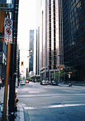
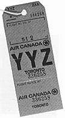
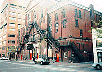
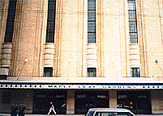
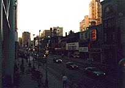
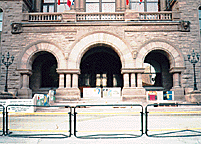
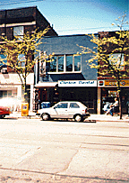
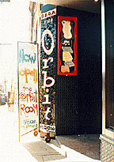
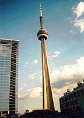

A RUSH FAN'S GUIDE TO TORONTO
By Bruce Holtgren [70724.1622@compuserve.com]
October 1995
Thanks to Puanani Akaki, Bruce Holtgren, and Kevin Wayte for the
pictures!
- Introduction
- For More Information
- In General
- Advice for U.S. Visitors
- Getting Around
- Rush-Related Attractions
- Other/Miscellaneous
- Weird Canadian Stuff
- The Inevitable Acknowledgments
- The Inevitable Final Disclaimer
INTRODUCTION
This guide was prepared after a mere two trips to Toronto, five
years apart, and a couple of other jaunts into Ontario
generally. Naturally, this makes me an automatic expert,
especially since I'm a know-it-all American. :) Both my
Toronto trips were inspired by Rush; this guide should suffice
as a general outline for anyone curious enough to "do" Toronto
from an American Rush fan's perspective. My apologies in advance
for the inevitable errors and misrepresentations; I would
appreciate any and all comments and suggestions, be they
positive or negative. And obviously, the standard disclaimer
applies to anyone who makes this trip themselves: Your mileage
will vary.
UPDATE NOTE: This is the THIRD edition of this guide, which
originally was posted to The National Midnight Star in May, 1994,
and is (I hope) going out again in its new-and-improved state in
October, 1995. There are many changes, big and small, in this
newer edition. My profuse thanks to the many readers who have
caught errors and suggested additions to the previous versions.
FOR MORE INFORMATION
You can get almost any phone number by calling Canada Bell
information. Just as in the U.S., dial the area code plus 555-1212.
For Toronto, that's (416) 555-1212; for the area of Ontario
outside Toronto, it's (905) 555-1212. And, of course, once you
have a phone number for a particular place, you can call that
place for an address, directions, hours or whatever. (Apologies
to those for whom calling Information is an obvious thing to do -
but a lot of people don't realize how easy it is.)
Most better libraries throughout North America, especially on
college campuses and in larger cities, will have the Toronto
phone book (and those of most other major cities) available as a
reference book. This is great for not only addresses and phone
numbers, but for lots of good, basic information about the city
in general. If you're lucky enough to get your hands on an intact,
consumer-oriented set of Yellow Pages, you'll find such things as
diagrams of the seating at Maple Leaf Gardens, as well as
information on special events. I highly recommend this route as a
way of getting information if you've hit a dead end.
But before you do any of that, read on. Most of the essential
poop on Toronto from a Rush fan's perspective (especially an
American Rush fan) is below!
IN GENERAL
 Toronto is Canada's largest city. Besides being the birthplace of
Rush, it's known for being diverse, cosmopolitan, relatively
clean, and relatively safe. (Actually, the fact that Rush happens
to be from there is just icing on the cake for a place that's
already so cool to begin with.) Toronto has a reputation, not
wholly undeserved, of being conservative and restrained as
big cities go. (You'll hear the locals complain about how the
bars close at 1 a.m., and about "a million other things which are
designed to prevent people from having a good time," as one
resident put it, somewhat bitterly.)
Toronto is Canada's largest city. Besides being the birthplace of
Rush, it's known for being diverse, cosmopolitan, relatively
clean, and relatively safe. (Actually, the fact that Rush happens
to be from there is just icing on the cake for a place that's
already so cool to begin with.) Toronto has a reputation, not
wholly undeserved, of being conservative and restrained as
big cities go. (You'll hear the locals complain about how the
bars close at 1 a.m., and about "a million other things which are
designed to prevent people from having a good time," as one
resident put it, somewhat bitterly.)

The people of TO (as it's widely known) are almost unfailingly
polite and friendly, far moreso than you'll find, by comparison,
in most U.S. cities. (Note: At least one Canadian has e-mailed me
to say he finds this situation to be exactly the opposite,
especially among women.) Service in stores is amazingly efficient
and friendly by U.S. standards. You'll encounter astonishing
politeness in the most implausible places. The last time I drove
into TO, a cabbie slowed down to let me cut in front of him, and
the next day a complete stranger got me high. That's Toronto for
you. Not that it's totally risk-free -- the usual big-city
precautions apply, as always -- but in terms of grace and class,
Toronto is a breed apart. For culture and vitality, it compares
favorably with the best of the U.S. (San Francisco, Chicago, New
York, etc.) Toronto is probably my favorite city to visit overall
-- I often say that if it weren't so friggin' cold, and expensive,
I'd emigrate.
ADVICE FOR U.S. VISITORS
Americans are generally welcome and well-received in Toronto, as
they are throughout Canada. [As if the poor northerners had any
choice but to be nice to us, eh? :) ] Even so, a few tips will
help make your visit go even smoother.
First, use Canadian money while in Canada. It's much easier, much
cheaper, and much more cool. U.S. funds seem to be readily
accepted almost everywhere, but you'll get a better deal by
exchanging your U.S. dollars for Canadian dollars before you
leave the U.S., and changing back when you return. (Most large
banks will do it, especially nearer the border -- some charge a
small fee; some don't.) (Note: Automatic teller machines and
credit-card companies will also do the exchange for you
automatically when it comes time to charge your account.) As of
this writing, the exchange rate has been its best (for Americans)
in years: 70 to 75 cents U.S. per Canadian dollar.
Speaking of money, if you spend a lot of it north of the border,
save all your receipts. After you get home, you can apply for a
refund of the Goods and Services Tax (GST) you paid. That's a
federal tax of 7% that supposedly only Canadians have to pay. If
you don't mind doing the paperwork, and if the amount of GST you
paid is worth the hassle to you, you can get the money back just
for the asking. Call 1-800-ONTARIO, and they'll send you the
form you need. Proof that this is for real: The Canadian
government did indeed send me a check after I applied for a
refund after my last trip. (If you'd prefer not to wait, you can
get your refund on the spot at any duty-free shop before you
cross back into the States.)
If you can possibly avoid it, don't buy gasoline in Canada.
During my most recent visit, it was approaching 60 Canadian cents
per liter, which works out to be ~$1.60 U.S. per gallon. (It's
lower currently (autumn 1995) and has been much higher in the
past.) It's cheapest, if you can, to fill up just before entering
Canada, and then again just after getting back to the States. If
you must buy gas in Canada, get it in the core of downtown
Toronto, where it's said to be the cheapest in all the Great
White North.
Many other products are also quite expensive in Canada
compared with the U.S., especially cigarettes and imported hard
liquor (some of which can't even be found except on the black
market, believe it or not). Other products, however -- notably
CDs and such things as athletic wear -- can be much less
expensive north of the border. Shop around.
Speaking of the border: You're questioned by Canadian agents upon
entering Canada, and by U.S. agents upon entering the States. The
U.S. guys are (of course) almost always the bigger buttholes.
Their main concern is that you may be smuggling in people who
don't belong in their country, or (much more commonly) goods
(legal and illegal) that you can make a huge profit from
reselling. They generally won't ask you point-blank if you're
carrying any dope, cigarettes, or booze -- but if they have any
reason to suspect you may be, they'll search you and your car.
They'll most likely just ask where you live and where you're
headed -- not to really listen to what you answer, but
how you answer. If you appear the least bit nervous,
that's when you're in trouble. Therefore, honesty, as usual, is the best
policy. If you're not trying to hide anything, then dealing
with the goons is a much easier ordeal.
On duties: U.S. law allows you to bring back from Canada up to
$400 worth of merchandise without having to pay a duty, if you've
been in Canada more than 48 hours. The maximum allowed is $25
worth of merchandise if you're in Canada less than 48 hours.
If it's more than the maximum, U.S. Customs will charge you a
duty on the excess. I've heard of duties of absurd amounts being
assessed, so it's best to keep the amount of merchandise down to
a reasonable level if at all possible. Disclose it all if asked.
You can best cover your ass if you can produce receipts. Or, buy
most of your stuff at a duty-free shop before re-entering the
U.S. Most border crossings have a duty-free shop, where you can
find lots of merchandise - especially booze; cigarettes; T-shirts
and other souvenirs; and cosmetics -- for insanely low prices. The
only catch: Once you buy something at the duty-free shop, you're
required to carry it out of the country. And you're required to
give your license-plate number when making your purchase, so
they'll know what you've got when you cross the border.
This may be sheer prejudice, but I've been told that in Canada,
as in much of the rest of the civilized world, Americans are
looked down upon as being rather boorish and slovenly. If this
sort of thing worries you, avoid the T-shirt/shorts/sneakers look
if you plan to do anything besides hang out on the street. On the
other hand, there are plenty of Canadians who understand the
anti-establishment attitude perfectly well, and who won't be
offended in the least if you insist on being a slob.
(Furthermore, I'm told that some Canadians also look
down their frostbitten noses at yuppie Americans who "dress to snub." Another
good reason to just be yourself.)
Speaking of showing a bit of class, be forewarned that knowing
(and using) your manners will get you a lot further in Canada
than it will in most U.S. cities. Canadians, even in urban
Toronto, are usually polite to a fault, and you'll feel better if
you return the favor. But don't do it Because I Said So -- do
it because it's the right and decent thing to do. [Again, though:
Feel free to refuse to be civilized. You can be assured that the
Canadians are used to it in Americans. :) ]
Really rude things Americans have been known to do in Canada
include actually thinking they can take guns north of the
border (don't even try it), and getting "free" health care from
the world-famous "free" Canadian health-care system. Yes, both
of these things have been known to happen many times. Fortunately,
none of the perpetrators have ever been proven to be Rush fans.
Also not allowed in Canada: Pepper spray. If you have any,
they'll confiscate it at the border.
Another aside: Don't try to enter Canada carrying little or no
money. The Canadian border authorities, probably suspecting that
you're only up to no good, won't let you in if they find out you
only have a dollar in your pocket, as one NMS subscriber once
discovered.
No, you needn't know French to get by in Toronto. If you're going
to Montreal (or anywhere else in Quebec), that's another matter.
But Ontario is by and large an English-speaking province.
(However, given Toronto's large ethnic population, it would
behoove you to brush up on your Chinese, Farsi, Punjabi,
Vietnamese, Greek, Korean ...)
GETTING AROUND
The main drag of Toronto is Yonge Street. If it's for sale in
TO, you can generally find it on Yonge (pronounced Young).
Lower/middle Yonge is teeming with hundreds of great restaurants,
bookstores, record stores, specialty shops, bars, clubs of all
types, and you-name-it. If shopping's your game, allow at least a
day or two to do nothing but cruise Yonge. Wear a good pair of
walking shoes; you'll need 'em. And take your credit cards.
(Yes, American cards are accepted in Canada. All too gladly.)
There's also a vast shopping district underground, extending
from near the lakefront several blocks north. Besides being a
unique experience on its own, it's a great way to avoid traffic,
crowds and nasty weather.
The central business district is generally centered around lower
Yonge, toward the lakefront. This is the optimal area to find
lodging, although you do pay for location. Prices vary wildly,
so call around. The best deal among the major chains that I could
find for my 1994 visit was at the Ramada Downtown City Hall
(89 Chestnut Street), which charged $89 Canadian (about $65 U.S.)
per night for a two-bed room, for either one or two people. If
that sounds steep, consider that many other places in the same
general area run hundreds of dollars a night. There are many
off-brand places that are even more affordable than the Ramada.
As with most things, the more you shop around, the better you're
likely to save. (And it goes without saying, but I'll say it
anyway: Staying out in the 'burbs is always lots cheaper - but
you pay the price of being removed (sometimes a long way removed)
from the heart of the city, often with no convenient
transportation downtown.)
Here's a lodging option courtesy of one John W. Connelly
[ jwcst4+@pitt.edu ] ...
>... for the benefit of any TO visitors who have cars and
>are looking to save some $$, I stayed at a campsite about
>40 mi northwest of Toronto which was fairly inexpensive,
>not over-crowded, and well-maintained.
>The site is just nw of Bolton, called the Albion Hills
>Conservation Area or something to that effect. (It's listed
>under Bolton in the AAA CampBook for Ontario). It was only
>$13 CA per night, and the location was much less bug-
>ridden than some other sites I tried in Ontario.
As in all big cities, parking in Toronto is difficult to find and
horrendously priced. Your best bet is to find a place to park the
car when you first get into town (ideally at your hotel), leave
it there for your entire stay if possible, and then just gulp and
pay the ~$10-$15-a-day cost when you leave. It just ain't worth
driving around all the time when you have to look so hard for
parking that's gonna be expensive no matter where you go.
What?? Get around without a car??? Yes -- unthinkable
as it is for many Americans, it's quite doable in a city as progressive as
Toronto, which is blessed with an excellent public transportation
system. There's a top-notch subway that'll take you most places
you need to go (downtown, anyway); a system of electric
streetcars; buses; the old reliable taxicab system; and even a
roving band of rickshaws. The latter are powered by athletic
young men who I suspect take the job mainly for its value as a
training regimen. I don't know how much a rickshaw ride costs,
but it's a beauty way to go.
One option that sounds like a good value to me (but I haven't
tried it): Get a weekend bus pass (they're on the order of
$3 or $5) -- you can use it an unlimited number of times over
a weekend for buses, streetcars, and the subway.
And another boffo bit of info: The TTC (Toronto Transit Corp.)
puts out great, free little maps that show all the bus routes
and subway routes. Highly recommended.
RUSH-RELATED ATTRACTIONS
At last -- here's what you're reading this for. (Sorry for taking
so long to get to it, eh.)
Actually, Rush seems somewhat taken for granted in Toronto, at
least on the surface, probably because the group has been such a
longtime institution -- and because so many other entertainers
have also come from the Great White North. However, there are a
handful of special places dear to the hearts of Rush freaks ...

1. YYZ: This is what your luggage tags will say if you fly
into Toronto's Lester Pearson International Airport. I couldn't care
less who Lester Pearson is or was, but the fact that Rush titled
the song after the international code for their home airport
makes this a great way to arrive. Even if you don't fly, YYZ
tags are easy enough to come by -- just hang around hotel
lobbies and ask people to let you have their luggage tags. Hey,
it worked for me. (I got some strange stares, but it worked.)
2. Subdivisions: Willowdale, the suburb where Geddy and Alex
grew up, and which is mentioned in "The Necromancer," is on the
northern edge of Toronto. (Rush trivia: It's Willow Dale in the
lyrics, and you can indeed ford the River Don, which was
rendered as the "River Dawn" in the song.) Anyway, I've never
been there. I suspect it's just your basic suburb -- in between
the bright lights and the far unlit unknown, and all that. I
suppose Fisherville Junior High School, where Geddy and Alex
met, is somewhere up there. There's also Scarborough, where the
residential portions of the "Subdivisions" video were filmed.
(One NMS subscriber tells me that L'Amoreaux High School, near
Warden and Finch Avenues, was used for the "high school halls"
sequences of the video.)

3. Massey Hall: This is where All the World's a
Stage was recorded in 1976. It's at Victoria and Shuter streets
downtown.

4. Maple Leaf Gardens: Another venue Rush has played often;
this one's on Carlton Street, just east of Yonge. The subway stops
right at the Gardens, at the College station -- known far and wide
as the MLG stop by hordes of hockey fans, Rush freaks, and
ticket scalpers. Near MLG (on Mutual Street?) is McClear Pathe
Studio, formerly known as McClear Place, where the band has done
most of its Toronto recording over the years.

5. Yonge Street: Might as well make this a separate entry of
its own, since it has a way of coming up over and over again. And
Yonge is a genuine Rush artifact in its own right: It's where
the night cruising scenes were shot for the "Subdivisions" video.
Look for Sam the Record Man and Pizza Pizza, both prominent in
the video.
6. Danforth and Pape: Many an astute Rush fan has noticed this
intersection in east-central Toronto. Its precise connection to
"La Villa Strangiato" is unknown (possibly even to the band,
after all these years). The intersection itself is graced by
three banks and a donut shop. (In 1989, when I made the
pilgrimage there, it was three banks and a Baskin-Robbins. How
times change.) Interestingly, it's an ethnic Greek neighborhood,
so most of the signs are in Greek. Conveniently, the subway stops
right at the intersection, so the best way to get to it is to hop
the turbine freight: Take the Bloor-Danforth line east to the
Pape station, and you're there.

7. The Parliament Building: Famed as the scene of the cover of
Moving Pictures, I was surprised at how easy it was to find
and access this one. It's at the south end of Queen's Park, which is
west of Yonge Street and south of Bloor. Once again, the subway
conveniently stops right near the holy spot -- in this case, it's
the Queen's Park station, on the Yonge-University-Spadina line.
When our troop of Rushfreaks visited on a Sunday, we had no
problem parking for free right in front of the building and
fooling around on the steps all we pleased. However, since this
is the seat of the Ontario government, after all, I'd imagine
both parking and access would be much more difficult on a
business day. But in any event, you can at least take pictures,
moving or otherwise.
8. Lakeside Park: Not in Toronto, as is commonly assumed. It's
about an hour to the south, in St. Catharines, Ontario, where
Neil grew up -- in a suburb called Port Dalhousie (pronounced Da-LOO-zy),
to be exact. The best directions I can muster are: From
Queen Elizabeth Way (the freeway), take the Ontario Street exit
(Exit 47), and head east (toward the lake - duh). Go down about
three lights, and hang a left onto Lakeport Road. Follow that
road until you cross a small bridge over what looks like a
harbor (there's a yacht club there). Lakeside Park is on the
right, immediately after you cross the bridge. WARNING: There
is no sign that actually says "Lakeside Park." The best way to
identify it for sure is that it's at the intersection of
Lakeport Road and a small street called Lock Street. (If you get
lost, just ask a local; they'll know. If nothing else, call the
St. Catharines Chamber of Commerce at (905) 684-2361; they're
very helpful with providing directions.) Anyway, Lakeside Park
these days features three or four restaurants and a couple of
bars near the road, and parking is usually plentiful on both
sides of the road. And yes, there are piers, lighthouses, a
beach, and willows (complete, at certain special times, with a
breeze). Admission is free, but the carousel, which operates
only during the summer, will cost you a nickel. The place was
deserted the first time I visited (May 24, 1989), but jam-packed
the next time (Mother's Day 1994). We were told by an Authentic
Canadian on the premises that they do have a fireworks show
every Victoria Day, which is traditionally the 24th of May but
now apparently celebrated, U.S. three-day-weekend style, on the
nearest Monday. Ah, tradition.
9. Geddy's, Alex's and Neil's homes:
C'mon, you didn't really
think you'd find out where they live from here, did you? Even if
I knew, I wouldn't tell. Aside from the fact that they've more
than earned their privacy, it's just uncool to barge into
anyone's lives, be they celebrities or not. And they're probably
not even home most of the time, anyway. (They're only at home
when they're on the run.)
10. SRO/Anthem: The office of Rush's longtime management
company is at 189 Carlton Street, several blocks east
of Yonge (take the streetcar), on the south side of Carlton. Entrance is via a
nondescript downstairs doorway. Yes, the office is somewhat open
to the public (I had no problems breezing right in, both in '89
and '94, but see below for a different experience) -- however,
don't expect much in the way of real information from the folks
who work there. Probably the best thing about the joint: Hanging
on the walls are some notable glittering prizes -- several of
Rush's gold and platinum records. It's worth a stop just to say
you've seen these.
(NOTE: The following comments on the SRO/Anthem office from
Puanani Akaka, an NMSer who visited this year ('95), should prove
useful ...):
> There is no sign along the street indicating the office's
> location. A simple "189" on the office itself gives any hint
> as to where you are. :)
>
> If you do, for whatever reason, wish to visit the office,
> CALL FIRST. It is a place of business and courtesy dictates
> that you consider calling ahead. Besides, it's near impossible
> to simply "walk in". There is a buzzer by the inner door, and
> unless someone in the office unlocks the door, you can't enter.
> When you do call, indicate what time you plan on being there,
> and BE THERE on time. Otherwise, you're just some bum off
> the street and they may not let you in. I would strongly
> suggest, tho, that unless you have real business with Anthem,
> that perhaps any visit to the office be kept to sightseeing
> from the outside. We don't want to inundate them with
> Hordes O Rush Fans, eh. :)
11. The Spirit of Radio: Yes, CFNY (102.1 FM) is still
alive and well, and plays pretty decent tunes -- but don't expect to hear
any Rush. CFNY has always played cutting-edge stuff, and it's
that fact to which the Rush song pays tribute. (For all some
people know, CFNY never did play any Rush, even in the old days.)
You can get a peek into their studio through a big window on
Bloor Street, just east of Bathurst Street.) Another coupla good
stations, where you can hear Rush, are Q107 and especially
97.7 out of St. Catharines (which you can pick up fine in
downtown TO). Crank it!


12. The Orbit Room: The restaurant/nightclub/hangout owned by
Alex opened after the last time I was up there, so I'll have
to leave it to others to provide a more complete description.
(See below.) I can, however, say it's at 580A College Street,
and the phone number is 535-0613. Directions from the subway,
according to the nice lady on the phone: Get off at the Bloor
and Bathurst stop, take the streetcar south on Bathurst to
College Street, then walk two stoplights west on Bathurst, and
you're there.
(NOTE: More detail on the Orbit Room, courtesy of Puanani Akaka,
follows ...):
> If you want to experience the place without the cover charge,
> try getting in before 9 pm. The cover charge is $5. Right
> when you walk into the red door, you'll come across stairs.
> Go up, and you're in.
> ...
> Good atmosphere, dark, but not gloomy. Picture of Alex is
> down at the back end of the bar (near the windows), but is
> fairly hidden. Generally, crowd tends to be well-dressed --
> no sleaze balls, here - and around the "older" crowd (30-40
> years of age). Personally, and as one who very rarely
> even walks past a bar much less enter one, I give it a Rush
> Fan Stamp of Approval! BAM
OTHER/MISCELLANEOUS
Free TO info: There are two free
newspapers that do a superb
job on listing the entertainment things to do in Toronto. They
are "Now" magazine and "Eye" magazine. They are widely
distributed on Thursdays downtown in shops big and small. Their
articles, reviews and ads generally are devoted to performing
arts, movies, recent music releases, concerts, the club circuit,
etc. They are the only comprehensive way of keeping up with
who's playing in the club scene (which is incredibly extensive).
Anyone visiting should definely consult these to fill in the odd
free night. (Note: an address for "Eye" that might be useful
is a URL -- http://www.interlog.com/eye/.
Beer: Don't forget to take advantage of the fact that in
Canada, such superb brands as Moosehead, Molson and Upper Canada
are domestics -- which means they're much, much cheaper
than in the U.S., whether procured from a store or in a bar. Drink up!
Bob and Doug MacKenzie-related stuff (speaking of beer, eh):
Gee, where to begin? There's all the LLBO (Licensed Liquor Board
of Ontario, or some such) beer stores; approximately 42 trillion
donut shops (at least 16 per capita, by my estimation), and,
presumably, all the back bacon you can stomach. And don't forget
to pick up your toque at Eaton's (or wherever).
Steve's Music: Anyone who is a musician, or just likes to
browse instrument stores, should check out Steve's, on the south
side of Queen Street just east of Spadina Avenue. It's the music
capital in Canada's recording capital. One source says Rush get
a lot of their stuff there, and that there's plenty of Rush
paraphernalia to gawk at. Another source says he's seen Tom
Cochrane, Jeff Healey, and Bobby Baker (the Tragically Hip) at
Steve's. Sounds like a pretty happenin' place to me! The Queen
Street streetcar goes right by the front door.
Record shops: There are many on Yonge Street alone. All are
worth checking out, since you never know what you'll find, but
I'll recommend four: 1. Sam the Record Man -- on Yonge at about
Dundas; you can't miss the enormous neon records on the front of
the building. Very large record store, excellent selection. Sam's
is in the "Subdivisions" video, as noted before; there's also
said to be a big ol' Chronicles poster inside, signed by our
heroes. 2. HMV -- also on Yonge, just a few doors away from Sam's.
Another enormous store with an excellent selection. Last time I
stopped in, there were CDs selling for as little as $7 Canadian
(that's ~$5 U.S.) -- AND they were having a buy-three-get-one-free
sale. I ended up buying four first-rate albums for an average of
$9 U.S. apiece. 3. Incredible Records -- Don't miss this place.
Run by a genuine former '60s radical (who used to be the Grateful
Dead's gardener, among many other things), this store is crammed
with thousands of rare items of all description, from old vinyl
to drawings by Jim Morrison to scads of Grateful Dead (and yes,
Rush) material. Must be seen to be appreciated -- on the west
side of Yonge, just south of Bloor. 4. The Record Peddler, 621
Yonge, across the street and down a piece from Incredible. They
get a lot of import material from Europe, and some neat rare
stuff, including from Rush.
Bookstores: Again, there are many, but the one you have to
hit is The World's Biggest Book Store. I'm not certain it
actually still is the world's biggest, but it's humongous. If
you're looking for any particular title (a book about Rush,
perhaps?), it'll be here. It's at 20 Edward Street, one block
north of Yonge and Dundas.
SkyDome: If you're any kind of baseball fan, or even if you
don't give a hoot about the sport, this is a must-see. (Hey, if
nothing else, Geddy hangs out here a lot.) It's the fanciest,
snazziest, most expensive stadium ever built. It's most famous
for its retractable roof, but it also includes a hotel, a Hard
Rock Cafe (both with views of the field, of course), and many
other unique features. Be prepared to pay a lot to experience
it -- Toronto is the most expensive place to see a Major League
Baseball game, both in terms of ticket prices and concessions.
But it's worth it. SkyDome is within walking distance of Union
Station, which is on the subway.

CN Tower: The tallest free-standing structure in the world
-- a big deal for first-time tourists but probably few others.
There's a restaurant/bar at the viewing level, and of course
it's a great view (especially impressive at night). Supposedly
you can see Niagara Falls on an especially clear day, but I
dunno about that. You can definitely see Willowdale, though!
Next to SkyDome -- you can't miss it. Great big tall thing.
Eaton Centre: Big-ass shopping mall in the heart of downtown.
Malls are pretty much just malls everywhere, but this one is a
monster, and with some nice urban architecture to show it all
off. On Yonge Street (where else?) between Dundas and Queen.
Subway stops: Dundas or Queen.
The Harbourfront: Lots of stuff to do on the lake, and I
still haven't gotten down there. Just looking at the map, I see
a Sports Hall of Fame; a Marine Museum; Ontario Place (a
cultural and entertainment complex); the Canadian National
Exhibition; and various beaches, islands, and shopping
complexes. All this is south of the CN Tower/SkyDome.
TV: I shudder to bring this up this as a possible activity
when there's so much to see and do in the real world, but
MuchMusic, Canada's version of MTV, probably deserves a mention.
I've watched very little of it myself, but from all I've heard,
it's generally no better than MTV (and that's pretty bad),
especially when it comes to any hope of seeing anything
Rush-related. One novel idea that MuchMusic is worth a small
amount of praise for: Speaker's Corner, wherein a person can
enter a booth (at MuchMusic's building at Queen and John Streets),
put a coin in the slot, and record a video message of a minute or
so in duration. If the MuchMusic gods like it, they'll put you on
the air, and you'll enjoy dubious fame all over Canada. (It is
said, by the way, that the Barenaked Ladies were discovered when,
after exhausting all other options for being seen and heard, they
recorded "Be My Yoko Ono" via Speaker's Corner.)
WEIRD CANADIAN STUFF
-->The currency is different colours (harder to counterfeit; makes
you wonder why the U.S. doesn't try it). There are no $1 bills -
they were all pulled from circulation when the gummint introduced
the widely reviled "looney" $1 coin. So called because (on most
of them, anyway) there's a loon on one side, loonies are ideal
souvenirs -- small, inexpensive, and uniquely Canadian.
-->Canadian spelling is British (usually), so there are "extra"
letters in words like colour, favourite, and jewellery. They also
like to use S instead of Z in words like civilisation.
-->And of course everything is metric, as in almost all other
civilized (or civilised) nations on the planet except the
United States. So get used to the thermometers saying 30 degrees
when it's hot. (And I have to wonder how many jokers from the
U.S. have tried to drive 100 mph on the expressways, where the
speed limit is 100 kph.)
-->Canadians really do say "eh" a lot, eh. And, just like in
"The Great White North" skits, the country is absolutely crazy
for beer and donut shops. (If you're a donut fan, do not fail to
visit Tim Horton's, which is apparently the Canadian version of
Dunkin' Donuts and can be found approximately every three
blocks.)
-->Canadian geographical trivia: Look at a map. The southern
part of Ontario looks like an upside-down dancing elephant.
It's true! Windsor is at the tip of the trunk, Sarnia is on
the top of the head, Niagara Falls is at the bottom of the
front foot, and Toronto is, uh, in the naughty spot. Would I
lie about such a fascinating fact?
THE INEVITABLE ACKNOWLEDGMENTS
I started out by spewing most of this off the top of my head, but
at least regained enough sense to run it by a few people who
would know most of it better than I would -- namely, Canadians. I
am sincerely indebted for the invaluable help of Brian Boyes;
Steve Cogswell; James MacKenzie Crawford; Myke Hutchings; Scott
Jaworski; Ian Sewell; Dave Sills; and the amazingly cool and
mysterious Peter the Yonge Street Deadhead.
Thanks also to four Americans in particular: Jimmy Lang (for
daring me into taking my second trip, which ended up being one
of the best weekends of my life); Joe Castle, for enduring my
blathering and philosophizing the entire time; Puanani Akaka, who
traveled practically halfway around the world to fearlessly
provide the very latest TO info herein; and Dan Delany, the
Keeper of the FAQ, for the basic concept: Information.
Credit is also due Ripley's Believe It Or Not for the bit about
the elephant.
THE INEVITABLE FINAL DISCLAIMER
Things in this are bound to be wrong, but I hope almost all of it
proves to be priceless basic info for a lot of people. Anyone
with any comments, questions, complaints, suggestions, or flames
should e-mail ME -- not the staff and management of The
National Midnight Star, nor any of the people named above. I'm the one
responsible, not they.
This thing is free for the taking (or at least for the on-line
time). In the spirit of crash@sonata(.purdue.edu?) and many other
freethinking-type Rush fans, do feel free to copy, steal, pass
along, change, delete, trash, set fire to, or do anything you
please to any or all of it. As Crash would say, enjoy your
freedom.
ORQ: "When we are young
Wandering the face of the earth
Wondering what our dreams might be worth
Learning that we're only immortal -
For a limited time ..."
Cheers,
Bruce
70724.1622@compuserve.com
October, 1995